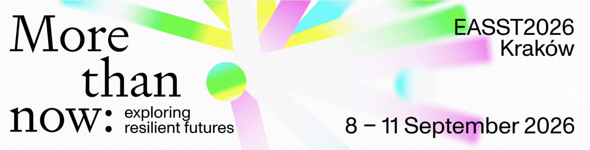

DATAGOV goes to EASST 2026

DATAGOV is convening a panel and a linked workshop at EASST 2026 in Kraków (8-11 September), under the conference theme "More-than-now."
The panel asks what it means when data infrastructures govern the polity. DATAGOV investigates how digital infrastructures, from biometrics and digital identity to health technologies, govern society by automating how information is produced, circulated, and acted upon, reshaping citizenship, sovereignty, and inequality.
The paired workshop complements the discussion through a guided exchange: mapping how different approaches connect within a broader research assemblage on regulatory data infrastructures, and identifying overlaps, complementarities, and opportunities for collaboration.
The contributions cross disciplinary, sectoral, and geographical boundaries, with particular attention to non-Western and comparative perspectives. Topics include assemblage thinking, infrastructural inversion, participatory methods, citizenship and digital agency, data sovereignty and expertise, infrastructures of inequality, biometric and health technologies, and algorithmic governance.
🗓️ Date: September 8, 2026
🕦 Time: 10:00
📍Location: EASST 2026 Conference, Kraków, Poland
📃 Conference website and registration here